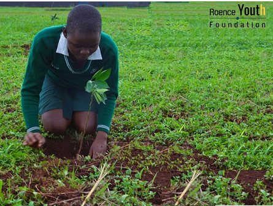

+256 7889 31578
Youth Microfinance Project
Kole Young Savers
The Youth Microfinance (Kole Young Savers) Project aims to improve the lives and help realize the rights of youths youth , with the overall goal to empower young people both socially and economically by increasing access to financial services and disseminating knowledge in critical life skills. The main objectives are: to promote asset building through Youth Savings and Loans Associations; to complement financial access with life skills and financial education training to enhance youth’s chances of successful transition into adulthood; and to document and share the results of the project. From the month of Aug 2021 to Dec 2021, one group of 26 youths were able to save 830,000 UGX. This shows how great this could create an impact in their finacial litracy and adult life.

Youth Dialogue with the Government
Uganda for Citizens
YD-G (Uganda for Citizens) project aims to reinterpret the African Cultural Heritage and bridge the gap between young people and the government through the dialogue of youth and decision influencers and decision-makers like Member of Parliaments, Local Leaders etc. It supports the cognition of democratic decision-making, fosters active citizenship and facilitates intercultural and intergenerational dialogue. The main aim of the project is to bridge the gap between the young people and the governments. Roence Youth Foundation takes part in the elaboration and coordination of project, organizes local and grassroot meetings. Providing also the core background, it elaborates the structure of local interviews, prepares online survey, background studies and the final publication.

Tree Planting Project
Tree G -
Reimagine. Recreate. Restore ecosystem restoration : preventing, halting and reversing the damage, from exploiting nature to healing it. Ecosystem restoration can take many forms: Growing trees, greening cities, rewilding gardens, changing diets or cleaning up rivers and coasts. This is the generation that can make peace with nature. Source: www.unep.org and www.en.unesco.org. With this project, our aim is to promote ecologically sound land use and natural resource management through green enterprises for improved livelihoods. And it is in our plan to have young people within the region to plant 175,000 trees in the span of 5 years with your support. Project priorities are based on challenges faced by the Environment and Natural Resources sector in Uganda and globally and aspirations in the policies governing environment and natural resources management. We focus on using a Communication, Education, Public Awareness approach and demonstration of strategies to cause positive change in attitude, mindset and behavior to deliver the desired development needs of people while maintaining healthy nature’s life support systems. This move also, promotes --> “Forest restoration: a path to recovery and well-being”. Restoring forests helps build a healthier world for ourselves and for future generations. By replanting and managing forests sustainably, we can help preserve our planet’s biodiversity and combat climate change while fostering economic activity that creates jobs and improves lives as we enter the UN Decade on Ecosystem Restoration (2021-2030).

Chilli Farming Project
Kole Chilli Farmers
Chilli is one of the growing most valuable crop in Uganda and East Africa as a whole. The crop is grown largely for its fruits all over the country . It is used in Uganda as a principal ingredient of various curries and it is also used for Vegetables, spices, condiments etc.Dry chillies are used for curry powder. This is a promising venture and so, having young people in the area engaged in growing it and connecting them to direct market is creating impact and improving their economic status.
Nursery Bed Enterprice
Pit Pi Anyim
Agroforestry plays an important role in the socio–economic development of communities, as trees planted on farms provide timber, fuelwood, fodder, fruits, medicine, windbreaks, and a whole range of other economic and environmental benefits. At present the need to plant trees on farms is on the increase. It is difficult, however, for smallholders to access – at the right time, in the right quantities and of high quality – the trees that they want to plant. In order to meet present and future demand for planting material, there is a need to promote on-farm and community tree nurseries. Such nurseries can be owned and managed by youths in groups, by self-help groups, by schools, by churches and/or by a range of other local institutions. They provide income-generating opportunities, act as models for further nursery development, provide seedlings more cheaply to planters, and can raise the particular species that local people are interested in. In order for young people to establish effective nurseries enterprises, it is important to provide these young people with the simple technical information and a capital they need for establishment and management of facilities. This is the role of this Roence.

Young Farmers Project
Kole Young Savers
Getting a group of young people to grow a specific type of crop in a season with direct connection to avaialble market and have such markets to provide expertise training and vetting. As in the north there are two seasons and so, young peopole within a group are trained on how to raise a crop by those who will buy and have them assisted during the course of the season until the harvest and providing them with a fairer market to sell their produce at a good price.

Piggery Project
Lwala Community Piggery Project
Kole District is primarily an agrarian economy with a moderate illiteracy rate. However, because of current agricultural practices, environmental factors and unavailability of large farming areas, Kole being a plateau area with quite a number of swamps, agriculture is primarily subsistence. People are not able to generate sufficient income out of agriculture as they do not invest much capital in it. Hence, along with agriculture, animal husbandry is inherent to the community. Pig rearing in the backyard of houses is not common for the Kole people yet in it, there lies a secret treasure, that's why we introduced this as one of the projects for young people to engage into. Pork is the most relished food in the region. However, the demand and supply gap is huge as there are not many pig rearing centers and especially during the festive seasons of Christmas and New Year hence making the prices soar high. Pork is normally sold at higher prices in Lango because of huge demand. On normal days retail prices are around UGX.14,000/kg which soars to about 16,000 - 18,000/kg in the festive season. It's is why it is such a lucrative project for young people to engage into.

Liquid Soap Making Project
Fresh Liquid Soap
Where formal job opportunities are few, running a small business or being self-employed is a key way to support oneself and one’s household. In this context the absence of appropriate financial services to start or grow a business is a huge barrier to young people, as is their lack of relevant skills. Therefore, the challenge is finding effective, scalable ways to overcome these barriers. How can we give young people access to the financial services and skills they need to be able to support themselves economically? Addressing youth financial inclusion will be key to realizing Goal 8 of the SDGs: ‘Promote sustained, inclusive and sustainable economic growth, full and productive employment and decent work for all.’ Skilling young people with different skillsets like Liquid Soap making helps give them opportunities to have grow economically and help sort the issue of employment by creating themselves such enterprises.

Rabbit Farming
Rabbit farming is known as cuniculture. It is low costable farming and has alternative breeding methods. Additionally, the interesting part is that they are a family-friendly animal. Raising rabbits as a pet or grow them for meat both can be profitable. However, our purpose of raising through identified youths; is majorly to improve the livelihood of farmers and thus eradicating poverty out of the Communities. With their fast rate of production, within a short time, they produce great yeilds fast growth rate. Making it a very promising project for young people. "Seeds of Gold" they call it! Our focus and strategy is to promote sustainable agricultural practices, strengthen markets and protect the environment in rural community.